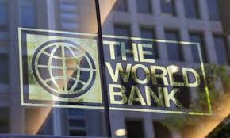
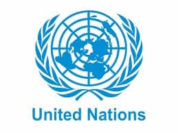

Dalam menjalani tujuan SDGs, kerjasama multilateral juga dibutuhkan untuk memenuhi tujuan SDGs dalam mengakhiri kemiskinan. Salah satu contoh kerjasama multilateral yang melibatkan berbagai organisasi internasional yang dirancang untuk mengatasi penyebab dalam mengakhiri kemiskinan dan mendukung tujuan SDGs adalah dengan adanya kerjasama multilateral Kemitraan PPB dengan Bank Dunia. Mereka sendiri memang telah bekerja sama dan telah terlibat dengan MDGs dan sekarang SDGs. PBB dan Bank Dunia telah membantu mengakhiri kemiskinan dengan mengadakan proyek-proyek pembangunan global seperti pada tahun 2015 mereka mengeluarkan pendanaan untuk pembangunan sebesar $400 miliar dari tahun 2016-2018. Selain itu mereka mempromosikan mobilisasi sumber daya dalam negeri, membantu menyelesaikan tujuan SDGs dengan kepemimpinan pemikiran, pertemuan global, dan penyerapan di tingkat negara. .
 .
Dari data-data yang diambil dari buku laporan tahun 2020 dana kemitraan WBG untuk SDGs, terdapat banyak program-program yang diadakan oleh PBB dan World Bank dalam membantu tujuan yaitu mengakhiri kemiskinan. Salah satu program tersebut adalah Proyek Pembiayaan Pertanian Digital Selatan-Selatan yang dipimpin oleh IFC Asia Timur dan Wilayah Pasifik. Mereka memanfaatkan teknologi yang tersedia dan mengadakan pertukaran pengetahuan. Kegiatan ini bertujuan untuk memperkuat kapasitas nasional dan memobilisasi inovasi digital solusi keuangan pertanian untuk meningkatkan inklusi keuangan. Mereka membiayai proyek di berbagai negara untuk meningkatkan produktivitas dan pendapatan pertanian. Mereka tidak hanya menyediakan program ini saja namun ada banyak sekali program yang telah mereka lakukan demi membantu SDGs dalam mengakhiri kemiskinan.
.
Indonesia menjadi salah satu bagian dari inisiatif global dari program yang dibuat oleh Bank Dunia dan PBB dalam mengatasi kemiskinan. Karena dalam berbagai program yang disediakan oleh mereka, Indonesia menjadi salah satu negara yang didukung oleh Bank Dunia dan PBB untuk berkembang. Hal ini dilakukan untuk meningkatkan kualitas hidup masyarakat melalui peningkatan akses terhadap pendidikan, kesehatan, pembangunan infrastruktur, dan lain-lain. Semua pendanaan dan program yang diadakan oleh PBB dan Bank Dunia bertujuan untuk menciptakan peluang ekonomi lebih luas bagi masyarakat miskin